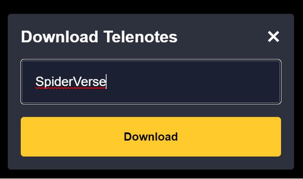

Code is available on Github at https://github.com/lucylufei/telenotes
The pandemic meant a lot of us couldn't watch TV together anymore. Some jumped to Chrome extension Teleparty, which allowed them to watch streaming video together over an internet connection, but we found it difficult to carve out time in our busy schedules to consistently watch TV together remotely.
YouTube comments are fun to read, but they aren't live. Twitch chat captures live reactions, but you have to watch the stream when it's live. Why can't you experience someone's live reaction at your own time?
Enter Telenotes.
This was a simple, but brilliant idea. A Chrome extension that allows you to leave notes at any timestamp of a streaming TV show or movie, and after you’re done, you can send the Telenotes file to someone else, and they can watch the same video while your comments pop up at the right time.
With your show or movie of choice open, you can click “start commenting” to… start commenting.
This is pretty awesome, you can even add emojis as reactions!
Send it to your friends, loved ones…
From any tab in your Chrome browser, open the extension and switch to the “Play” tab. You then open the file, press “Play”, and the video should automatically load and start playing.
The play interface looks pretty similar, but there's no option to comment. And there you have it! A cool little Chrome extension that allows you to watch TV with others, but on your own time. Get 99% of someone's live reactions, without having to schedule it in advance.